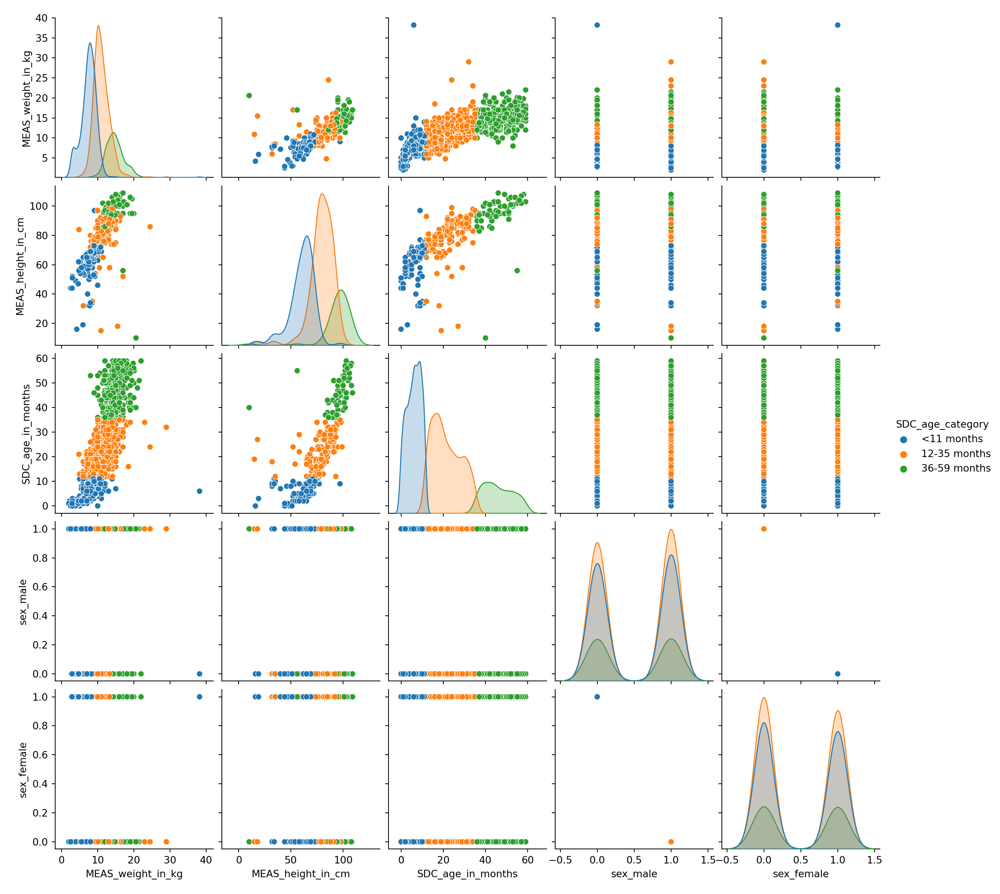

```{r}
library(tidyverse) # includes dplyr and tibble
library(skimr)
library(ggplot2)
library(DataExplorer)
library(reticulate)
```20 📙 Practical
20.1 Introduction
20.1.1 Overview
This tutorial is adapted from the excellent Machine learning in Python with scikit-learn
20.1.2 Learning objectives
- explore data
- prepare data
- fit a k-nearest neighbors model on a training dataset
- evaluate its generalization performance on the testing data
20.2 Question
We are interested in predicting the age of the child based on height and weight measured during the consultation.
- MEAS_weight_in_kg and
- MEAS_height_in_cm.
20.3 Load the data
The dataset is stored in dataset4.xlsx.
Read the dataset and store it into a dataframe called df.
```{r}
df <- openxlsx::read.xlsx("./data/dataset4.xlsx")
``````{r}
df <- df %>%
dplyr::mutate(
SDC_age_category = dplyr::case_when(
SDC_age_in_months < 12 ~ "<11 months",
SDC_age_in_months >= 12 & SDC_age_in_months < 36 ~ "12-35 months",
SDC_age_in_months >= 36 & SDC_age_in_months < 60 ~ "36-59 months",
TRUE ~ ""
)
) %>%
tibble::remove_rownames() %>%
tibble::column_to_rownames(var="child_ID") %>%
dplyr::mutate(across(c(SDC_sex,
SDC_age_category), factor))
```20.4 Data exploration
We want to do some data exploration to get an initial understanding of the data. Before building a predictive model, it is always a good idea to look at the data:
- maybe the task you are trying to achieve can be solved without machine learning;
- you need to check that the information you need for your task is actually present in the dataset;
- inspecting the data is a good way to find peculiarities. These can arise during data collection (for example, malfunctioning sensor or missing values), or from the way the data is processed afterwards (for example capped values).
20.4.1 Data structure
Examine the structure of the data, including variable names, labels.
- How many features are numerical?
- How many features are categorical?
Display the variables/features child_id, MEAS_weight_in_kg and MEAS_height_in_cm for the 10 first samples in the data.
```{r}
# Write your code here
``````{r}
df %>%
skimr::skim()
```| Name | Piped data |
| Number of rows | 2003 |
| Number of columns | 5 |
| _______________________ | |
| Column type frequency: | |
| factor | 2 |
| numeric | 3 |
| ________________________ | |
| Group variables | None |
Variable type: factor
| skim_variable | n_missing | complete_rate | ordered | n_unique | top_counts |
|---|---|---|---|---|---|
| SDC_sex | 0 | 1 | FALSE | 2 | 1: 1037, 2: 966 |
| SDC_age_category | 0 | 1 | FALSE | 3 | 12-: 901, <11: 780, 36-: 322 |
Variable type: numeric
| skim_variable | n_missing | complete_rate | mean | sd | p0 | p25 | p50 | p75 | p100 | hist |
|---|---|---|---|---|---|---|---|---|---|---|
| MEAS_weight_in_kg | 0 | 1.00 | 10.25 | 3.40 | 2 | 8 | 10 | 12 | 38.2 | ▆▇▁▁▁ |
| MEAS_height_in_cm | 1680 | 0.16 | 75.61 | 17.42 | 10 | 65 | 77 | 89 | 109.0 | ▁▁▆▇▅ |
| SDC_age_in_months | 0 | 1.00 | 19.41 | 14.76 | 0 | 8 | 16 | 29 | 59.0 | ▇▆▃▂■|
Numerical variables can be naturally handled by machine learning algorithms that are typically composed of a sequence of arithmetic instructions such as additions and multiplications.
20.4.2 Data preparation
20.4.2.1 Missing data
```{r}
DataExplorer::plot_missing(df,
geom_label_args = list(size = 2, label.padding = unit(0.2, "lines")))
```20.4.2.2 Encoding of categorical data
sex_df <- df %>%
dplyr::select(SDC_sex)```{python}
from sklearn.preprocessing import OneHotEncoder
encoder = OneHotEncoder(sparse = False)
sex_encoded = encoder.fit_transform(r.sex_df)
```df <- cbind(df,
data.frame(py$sex_encoded)) %>%
dplyr::rename(sex_male = X1,
sex_female = X2)
df %>%
head(10) %>%
knitr::kable()| MEAS_weight_in_kg | MEAS_height_in_cm | SDC_sex | SDC_age_in_months | SDC_age_category | sex_male | sex_female | |
|---|---|---|---|---|---|---|---|
| 150 | 3 | NA | 1 | 1 | <11 months | 1 | 0 |
| 162 | 14 | NA | 1 | 36 | 36-59 months | 1 | 0 |
| 1177 | 3 | NA | 2 | 0 | <11 months | 0 | 1 |
| 1245 | 8 | NA | 2 | 19 | 12-35 months | 0 | 1 |
| 1262 | 16 | NA | 2 | 55 | 36-59 months | 0 | 1 |
| 1264 | 9 | NA | 1 | 7 | <11 months | 1 | 0 |
| 1265 | 9 | NA | 1 | 21 | 12-35 months | 1 | 0 |
| 1266 | 8 | NA | 1 | 6 | <11 months | 1 | 0 |
| 1268 | 10 | NA | 1 | 13 | 12-35 months | 1 | 0 |
| 1269 | 13 | NA | 1 | 49 | 36-59 months | 1 | 0 |
20.4.3 Target classes
What are the different age categories available in the dataset and how many observations/samples of each types are there?
Tip
- R: use
table - Python: select the right column and use the
value_countsmethod.
```{r}
# Write your code here
``````{r}
table(df$SDC_age_category)
```
<11 months 12-35 months 36-59 months
780 901 322 20.4.4 Feature distribution
Let us now look at the distribution of individual features, to get more insights about the data.
```{r}
# Write your code here
```We can start by plotting histograms, note that this only works for features containing numerical values
```{r}
df %>% ggplot2::ggplot(aes(x = MEAS_height_in_cm,
fill = SDC_age_category)) +
geom_histogram(binwidth = 2, alpha = 0.5, position = "identity") +
theme_minimal()
``````{r}
df %>% ggplot2::ggplot(aes(x = MEAS_weight_in_kg,
fill = SDC_age_category)) +
geom_histogram(binwidth = 1, alpha = 0.5, position = "identity") +
theme_minimal()
``````{python}
import seaborn
import matplotlib.pyplot
pairplot_figure = seaborn.pairplot(r.df, hue = "SDC_age_category")
matplotlib.pyplot.show()
```
Show variable/feature distribution for each age category.
Looking at these distributions, how hard do you think it will be to classify the age category only using height and weight?
```{r}
# Write your code here
```Looking at the previous scatter-plot showing height and weight, the age categories are reasonably well separated.
There is some small overlap between the age categories, so we can expect a statistical model to perform well on this dataset but not perfectly.
```{r}
# Write your code here
```20.5 Train-test data split
When building a machine learning model, it is important to evaluate the trained model on data that was not used to fit it, as generalization is more than memorization (meaning we want a rule that generalizes to new data, without evaluating on data we memorized). The data used to fit a model is called training data.
Correct evaluation is easily done by leaving out a subset of the data when training the model and using it afterwards for model evaluation. The data used to assess a model is called testing data.
20.5.1 Remove missing data
```{r}
df <- df[!is.na(df$MEAS_height_in_cm), ]
df %>%
head(5) %>%
knitr::kable()
```| MEAS_weight_in_kg | MEAS_height_in_cm | SDC_sex | SDC_age_in_months | SDC_age_category | sex_male | sex_female | |
|---|---|---|---|---|---|---|---|
| 5014 | 11.9 | 96 | 1 | 46 | 36-59 months | 1 | 0 |
| 5035 | 9.0 | 77 | 2 | 9 | <11 months | 0 | 1 |
| 5037 | 6.0 | 65 | 2 | 6 | <11 months | 0 | 1 |
| 5058 | 10.0 | 75 | 1 | 17 | 12-35 months | 1 | 0 |
| 7499 | 6.0 | 32 | 2 | 18 | 12-35 months | 0 | 1 |
20.5.2 Generate the training / test sampling
Use a seed to make the sampling reproducible (i.e. the same sampling will be generated each time we run this code)
```{r}
set.seed(1)
```Create ID column
```{r}
df$id <- 1:nrow(df)
```Use 70% of dataset as training set and 30% as test set
```{r}
train_df <- df %>%
dplyr::sample_frac(0.70)
test_df <- dplyr::anti_join(df,
train_df,
by = 'id')
```20.5.3 Separate the data and the target
Create the target.
```{r}
train_target <- train_df["SDC_age_category"]
test_target <- test_df["SDC_age_category"]
```Remove the target from the training and test dataset to create the data matrix.
```{r}
train_data_matrix <- train_df %>%
dplyr::select(-SDC_age_category,
-SDC_age_in_months)
test_data_matrix <- test_df %>%
dplyr::select(-SDC_age_category,
-SDC_age_in_months)
```20.6 Train the classifier
Let us now use a nearest neighbour approach for learning the target from the training data matrix of weights and heights. The principle behind nearest neighbor methods is to find a predefined number of training samples closest in distance to the new point, and predict the label from these.
Despite its simplicity, nearest neighbors has been successful in a large number of classification and regression problems. Supervised neighbors-based learning comes in two flavors: * classification for data with discrete labels * regression for data with continuous labels.
```{python}
from sklearn.neighbors import KNeighborsClassifier
model = KNeighborsClassifier()
_ = model.fit(r.train_data_matrix, r.train_target.values.ravel())
```KNeighborsClassifier()In a Jupyter environment, please rerun this cell to show the HTML representation or trust the notebook.
On GitHub, the HTML representation is unable to render, please try loading this page with nbviewer.org.
KNeighborsClassifier()
20.7 Evaluate the performance of the classifier
```{python}
target_predicted = model.predict(r.test_data_matrix)
```KNeighborsClassifier()In a Jupyter environment, please rerun this cell to show the HTML representation or trust the notebook.
On GitHub, the HTML representation is unable to render, please try loading this page with nbviewer.org.
KNeighborsClassifier()
Confusion matrix
```{r}
#| df-print: kable
combined <- cbind(test_target, py$target_predicted)
colnames(combined) <- c("target", "prediction")
combined <- combined %>%
dplyr::mutate(correct = 1 * (target == prediction))
combined %>% head(5)
``` target prediction correct
5035 <11 months 12-35 months 0
5037 <11 months 12-35 months 0
7499 12-35 months <11 months 0
7994 36-59 months 12-35 months 0
7995 36-59 months 12-35 months 0perf <- mean(combined$correct)Number of correct prediction: 0.7216495
accuracy = model.score(r.test_data_matrix, r.test_target)KNeighborsClassifier()In a Jupyter environment, please rerun this cell to show the HTML representation or trust the notebook.
On GitHub, the HTML representation is unable to render, please try loading this page with nbviewer.org.
KNeighborsClassifier()
model_name = model.__class__.__name__KNeighborsClassifier()In a Jupyter environment, please rerun this cell to show the HTML representation or trust the notebook.
On GitHub, the HTML representation is unable to render, please try loading this page with nbviewer.org.
KNeighborsClassifier()
The test accuracy using a KNeighborsClassifier is 0.7216495.
Important
The score of a model will in general depend on the way we make the training / test split.
- One downside of doing a single split is that it does not give any information about this variability.
- Another downside, in a setting where the amount of data is small, is that the data available for training and testing will be even smaller after splitting.
20.8 Estimators